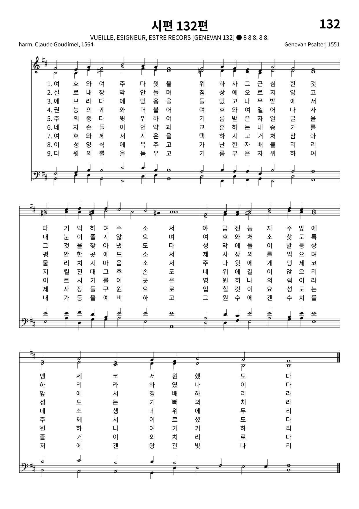

시편 132편
VUEILLE, ESIGNEUR, ESTRE RECORS [GENEVAN 132] · 8 8 8. 8 8.
곡조: Genevan Psalter, 1551 · 화성: Claude Goudimel, 1564 · 가사: 개역한글판 시편 132편 편역(AI 초벌 편역판 · 신학 감수 전) · 9절
악보 PDF MusicXML(출력용) MusicXML(반주용, 전주·반복 포함) 개역한글 시편 132편 읽기

가사
1절
여호와여 주 다윗을
위하사 그 근심한 것
다 기억하여 주소서
야곱 전능자 주 앞에
맹세코 서원했도다
여호와여 주 다윗을
위하사 그 근심한 것
다 기억하여 주소서
야곱 전능자 주 앞에
맹세코 서원했도다
2절
실로 내 장막 안 들며
침상에 오르지 않고
내 눈이 졸지 않으며
여호와 처소 찾도록
하리라 하였나이다
실로 내 장막 안 들며
침상에 오르지 않고
내 눈이 졸지 않으며
여호와 처소 찾도록
하리라 하였나이다
3절
에브라다에 있음을
들었고 나무 밭에서
그것을 찾아냈도다
성막에 들어 발등상
앞에서 경배하리라
에브라다에 있음을
들었고 나무 밭에서
그것을 찾아냈도다
성막에 들어 발등상
앞에서 경배하리라
4절
권능의 궤와 더불어
여호와여 일어나사
평안한 곳에 드소서
제사장 의를 입으며
성도는 기뻐 외치라
권능의 궤와 더불어
여호와여 일어나사
평안한 곳에 드소서
제사장 의를 입으며
성도는 기뻐 외치라
5절
주의 종 다윗 위하여
기름 받은 자 얼굴을
물리치지 마옵소서
주 다윗에게 맹세코
네 소생 네 위에 두리
주의 종 다윗 위하여
기름 받은 자 얼굴을
물리치지 마옵소서
주 다윗에게 맹세코
네 소생 네 위에 두리
6절
네 자손들이 언약과
교훈하는 내 증거를
지킬진대 그 후손도
네 위에 길이 앉으리
주께서 이르셨도다
네 자손들이 언약과
교훈하는 내 증거를
지킬진대 그 후손도
네 위에 길이 앉으리
주께서 이르셨도다
7절
여호와께서 시온을
택하시고 거처 삼아
이르시기를 이곳은
영원히 나의 쉼이라
원하니 여기 거하리
여호와께서 시온을
택하시고 거처 삼아
이르시기를 이곳은
영원히 나의 쉼이라
원하니 여기 거하리
8절
이 성 양식에 복 주고
가난한 자 배불리리
제사장들 구원으로
입힐 것이요 성도는
즐거이 외치리로다
이 성 양식에 복 주고
가난한 자 배불리리
제사장들 구원으로
입힐 것이요 성도는
즐거이 외치리로다
9절
다윗의 뿔을 돋우고
기름 부은 자 위하여
내가 등을 예비하고
그 원수에겐 수치를
저에겐 왕관 빛나리
다윗의 뿔을 돋우고
기름 부은 자 위하여
내가 등을 예비하고
그 원수에겐 수치를
저에겐 왕관 빛나리